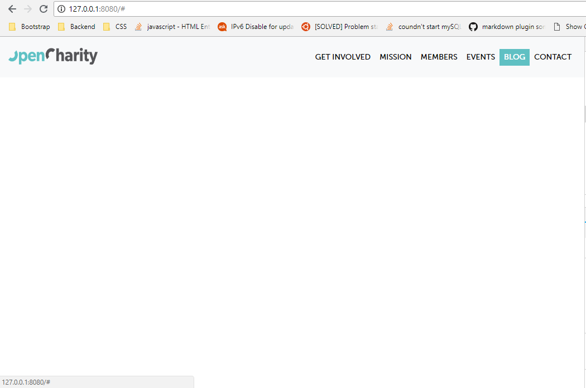
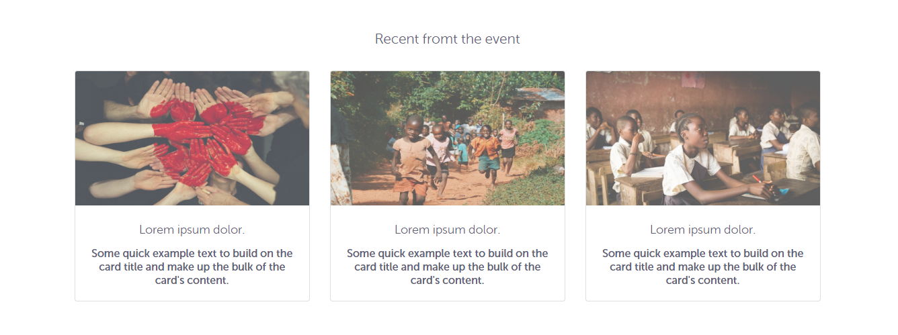
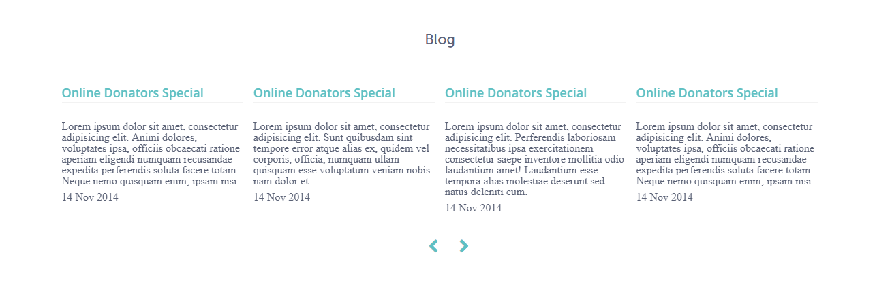
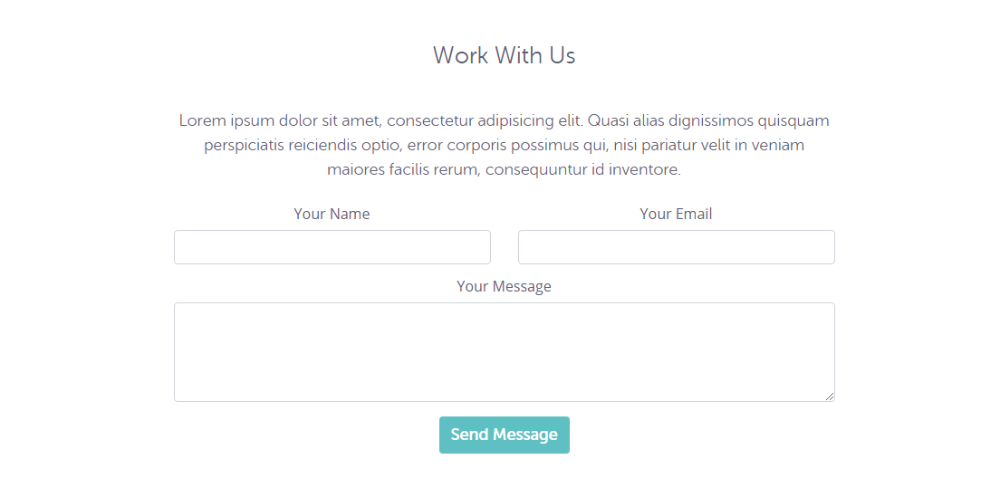

Chapter 2: OpenCharity Website
OpenCharity Overview
Overview:
An overview on the website that we are going to clone
- What components is it made up of
- Point out some techniques and features used or built.
Details:
Features
Scrollspy
Blink button effect
Slider with mouse drag
Responsiveness
Bookmarks:
A look on the prototype website
Prepare Files
Overview:
- Build project folder structure
- Convert PSD file to some neccessary assets
- Integrate Bootstrap 4, jQuery and Popper.js
Details:
Step by Step
Create new project folder with structure below

Find and download the following fonts then save them to assets/style/fonts :
Museosans 500OpenSansOpenSans semiboldMuseosans rounded 300Download the OC.PSD file from this link
Open file with Photoshop and export neccessary components to PNG, details in here Trello task
Inspect colors from PSD file and note them down for later use.
Download Bootstrap 4 and save bootstrap.min.js and bootstrap.min.css in "assets/style/js" and "assets/style/js"
Download and save jquery-3.3.1.slim.min.js in "assets/style/js"
Download and save popper.min.js in "assets/style/js"
Go to Bootstrap Starter Template and copy paste its content to index.html
Now we are ready
Bookmarks:
Link to GitHub Project: OpenCharity
Linking Files Implementing Style sheet
Overview:
Link CSS and JS files to index.html
Implement CSS of our own with less
Details:
Features:
Using LESS
Use variables for code reuse and function darken().
CSS Reset
Is a short, often compressed (minified) set of CSS rules that resets the styling of all HTML elements to a consistent baseline.
Why use CSS Reset ?
Every browser has its own default ‘user agent’ stylesheet, that it uses to make unstyled websites appear more legible.Using a CSS Reset, CSS authors can force every browser to have all its styles reset to null, thus avoiding cross-browser differences as much as possible.
Style Sheet Implementation
Declare some variables that hold values of mainly-used colors and font-families
CSS reset
Customize components that will be used like headers, buttons, list, anchors.
Bookmarks:
Link to GitHub Project: OpenCharity
Navbar Part 1
Overview:
Implement styles for Navigation Bar
Details:
- Display favicon
- Display Open Charity logo
- Implement navbar, navbar links and navbar items styles
- Add padding
- Add hover effect
- Add transition
- Change font
- Change background color
The Navbar now look like this

Bookmarks:
Link to GitHub Project: OpenCharity
Navbar Part 2
Overview:
Implement event-handlers for Navigation bar
Details:
Effect implemented
- Close Responsive menu when a link is clicked
- Activate scrollspy to add active class to navbar items on scroll
- On scroll down if the offset is higher than 50px the navbar shrink
Note
@media rule CSS: The @media rule is used in media queries to apply different styles for different media types/devices.
Media queries can be used to check many things, such as:
- width and height of the viewport
- width and height of the device
- orientation (is the tablet/phone in landscape or portrait mode?)
- resolution
Details about syntax and usage are in Bookmarks
Bookmarks:
Link to GitHub Project: OpenCharity
Header Part 1
Overview:
Implement page header sections
Details:
Components implemented
- Header with centered inspiration texts
- Event introduction and schedule section
- Register button
Note
- Can use the
Text toolof Photoshop to extract text from PSD file
Bookmarks:
Link to GitHub Project: OpenCharity
Header part 2
Overview:
Finish page header sections
Details:
Components implemented
- Add background image for header
- Change background-color footer
- Add border-bottom footer
- Reposition event detail and
Registerbutton - Change color and font of texts
Note
- You may confuse about background css properties. Read more in the Bookmarks.
Bookmarks:
Link to GitHub Project: OpenCharity
Get involved section
Overview:
Implement UI for get-involved section
Details:
Components implemented
- Add Group Logos, Sologans, and Intro
Note
Differences between inline elements and block-inline elements
Elements with display:inline-block are like display:inline elements, but they can have a width and a height. That means that you can use an inline-block element as a block while flowing it within text or other elements.
Difference of supported styles as summary:
- inline: only margin-left, margin-right, padding-left, padding-right
- inline-block: margin, padding, height, width
Bookmarks:
Link to GitHub Project: OpenCharity
Inline block and inline elements
Mission section
Overview:
Implement UI for Mission Section
Details:
Components implemented
Section with id = mission containing:
- Three col represent three mission
- Cols contain a card with icon, title and content
Note
border-radius CSS property
The border-radius property defines the radius of the element's corners.
This property allows you to add rounded corners to elements!
This property can have from one to four values. However there are other rules, see in the Bookmarks
Bookmarks:
Link to GitHub Project: OpenCharity
Members section
Overview:
Install Owl Carousel 2
Implement UI for Member Section
Details:
Implementation
Owl Carousel 2
What is it ?
Owl Carousel is a touch enabled jQuery plugin that lets you create a beautiful responsive carousel slider.
Why use Owl Carousel 2 over Bootstrap Carousel ?
Fully Customisable: Over 60 options. Easy for novice users and even more powerful for advanced developers.
Touch and Drag Support: Designed specially to boost mobile browsing experience. Mouse drag works great on desktop too!
Fully Responsive: Almost all options are responsive and include very intuitive breakpoints settings.
Modern Browsers: Owl uses hardware acceleration with CSS3 Translate3d transitions. Its fast and works like a charm!
Zombie Browsers: CSS2 fallback supported for older browser.
Modules and Plugins: Owl Carousel supports plugin modular structure. Therefore, you can detach plugins that you won't use on your project or create new ones that fit your needs
Steps to Install
- Download Owl Carousel 2
- Move to dist folder. Copy
owl.carousel.min.jsto /assets/style/js - Move to dist/assets folder. Copy
owl.theme.default.min.cssowl.carousel.min.cssto /assets/style/css
How to used
- Put class
owl-carouselandowl-themeon thedivwhere you want the carousel to appear - Then put on images inside as carousel items
- Put class
JavaScript
- Call Carousel constructor with syntax: $('<div_id>').owlCarousel({ <Object containing setting properties> })
Result

Note
Checkout the list of options for Additional Carousel settings in the Bookmarks.
Bookmarks:
Link to GitHub Project: OpenCharity
Event section
Overview:
Implement UI for Event Section
Details:
Implementation
- Using Bootstrap
cardto make three columns containing three cards describing three recents events Result

Note
Bookmarks:
Link to GitHub Project: OpenCharity
Blog section
Overview:
Implement UI for Blog Section
Details:
Implementation
Using Owl Carousel 2 to create a slider with 4 blogs
Result

Note
Bookmarks:
Link to GitHub Project: OpenCharity
Contact Section and Footer
Overview:
Implement UI for Contactc Section Implement UI for Footer
Details:
Implementation
- Implement Contact form with input fields
Name,Email, andMessagetextarea Result

Implement Footer with social sharing buttons
Facebook,TwitterandGoogle PlusResult
Note
- Always structure css similar to HTML to minimize code repetition and narrow down css effects range.
Bookmarks:
Link to GitHub Project: OpenCharity
Enhancements
Overview:
Add animation, fix responsive bugs, make changes to UI
Details:
Implementation
Integrate Animate.css library
- Go to https://daneden.github.io/animate.css/
- Click on
Download Animate.css - Save content as
animate.cssto following path:./assets/style/css/animate.css
- Add flash animation to
Slack Groupbutton - Active Scrollspy to
navbar - Smooth Scrolling with jQuery
- Add fade in effect to
Mission Section Change letter-spacing of Event Footer for better mobile look
Before
After
Note
Bookmarks:
Link to GitHub Project: OpenCharity
Testing
Overview:
Cover some remaining issues about UI, animation Increase website performance Do some testing
Details:
Issues Spotted
Compressing Image
Steps
Upload all project images and wait for image compressing to complete
Download them all and replace old images with new ones
Cross-browser Testing
Try out website on different browser and make sure everything works fine
Animation
Add fade in up animation to header
With Mobile devices
Remove fade in animation from Mission Section while on mobile cuz mobile does not have hover effect
Put website online
Steps
- Go to https://app.netlify.com/drop
- Drag and Drop your project folder into white box
- Wait for uploading and enjoy.
W3C markup validation service
What is ?
The Markup Validator is a free service by W3C that helps check the validity of Web documents.
Most Web documents are written using markup languages, such as HTML or XHTML. These languages are defined by technical specifications, which usually include a machine-readable formal grammar (and vocabulary). The act of checking a document against these constraints is called validation, and this is what the Markup Validator does
How to use
Paste your website url on the input
Click
Checkand wait for result
Website Speed Test
- Go to https://tools.pingdom.com
- Paste website url into the input
- Click
Start Testand wait for result
Note
Bookmarks:
Link to GitHub Project: OpenCharity
Recap
Overview:
Review what we have built so far
Details:
How we can export images from PSD file as well as getting colors and fonts for our website
Then moving to setting our variables and style sheet
Learned how to nest our code in
lessso it's more readable, understandable.Learned how to use Bootstrap 4 and its components plus adding animation to our project with
jQueryorAnimate.cssLearned how to organize our project by applying our
Trellosteps that we had written before startingLearned how to write clean code with comment
Dealt with responsive part so our website is available on all devices
Increase website performance and run the markup and speed test
Bookmarks:
Link to GitHub Project: OpenCharity